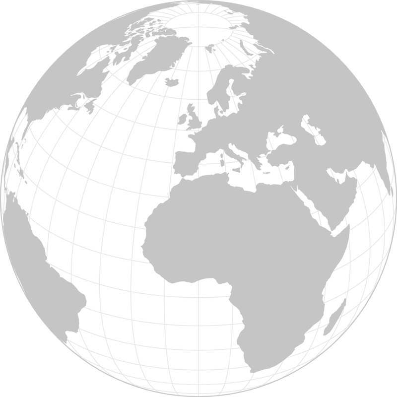
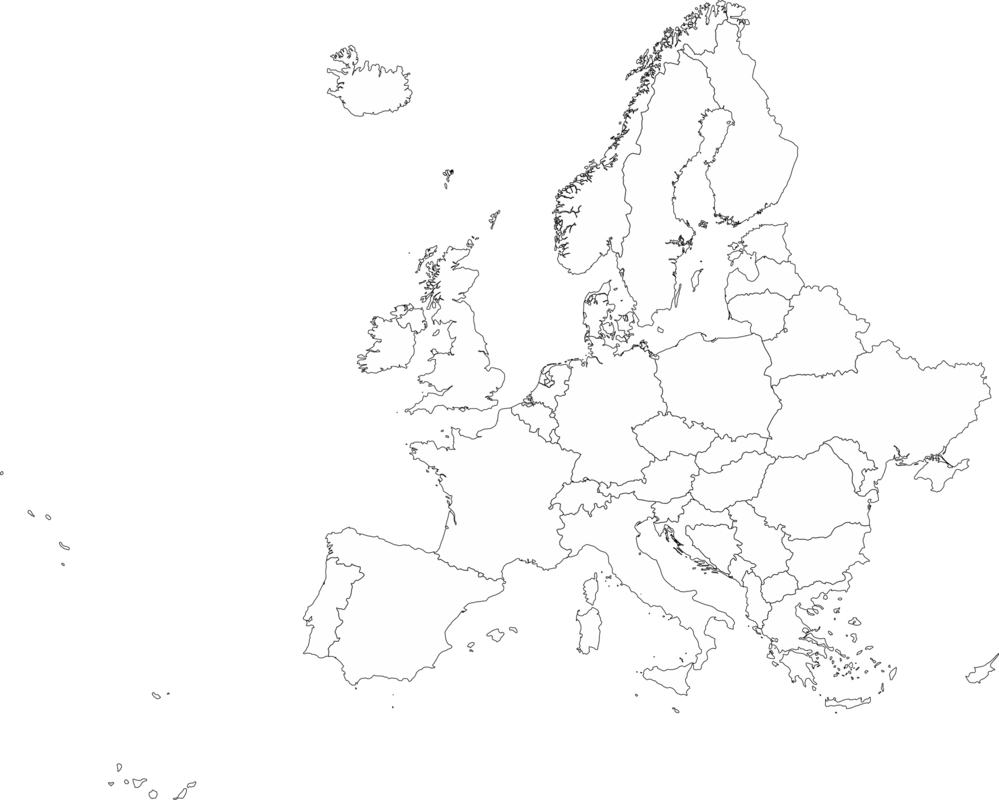
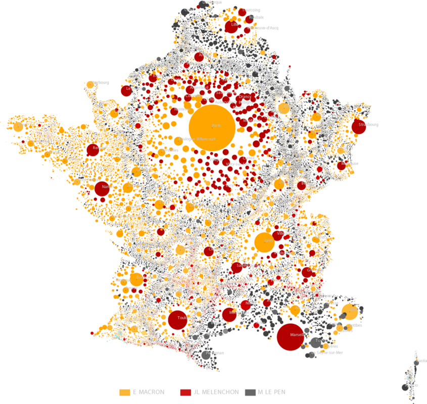
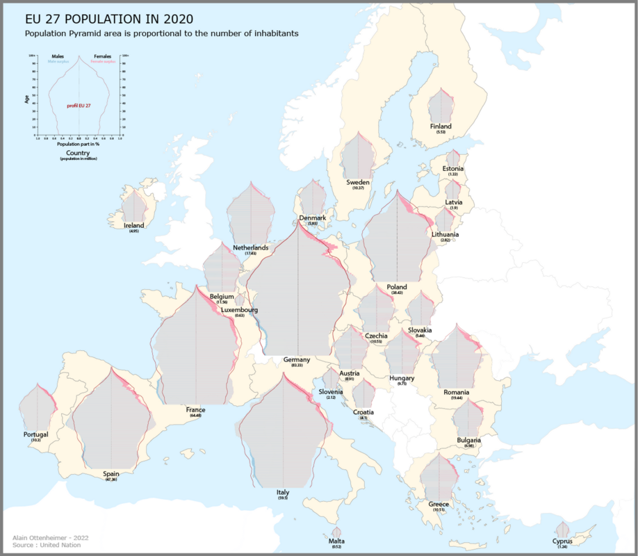
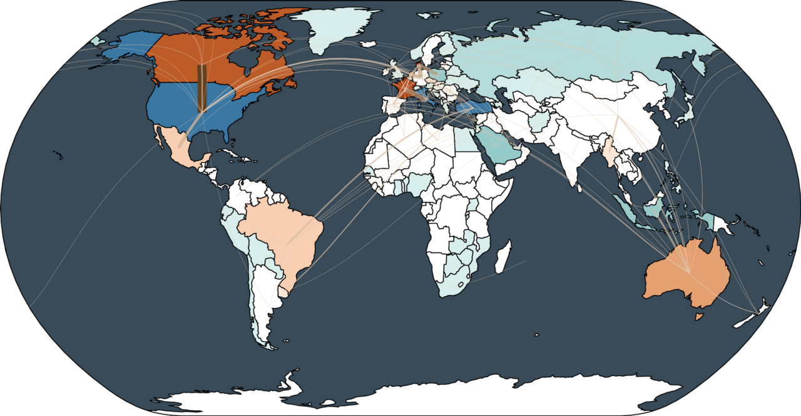
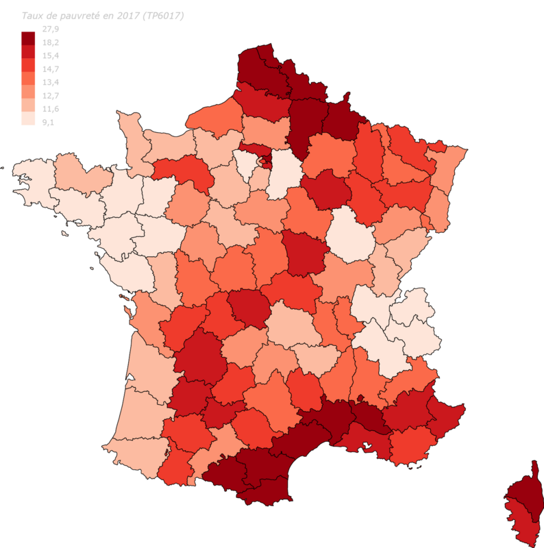

Historique
La cartographie est l'art et la science de créer des cartes, qui sont des représentations graphiques de la surface de la Terre ou d'autres surfaces. Les cartes ont été utilisées à travers l'histoire pour naviguer, pour planifier des voyages et des expéditions, pour décrire des territoires et des frontières, et pour représenter des données géographiques.
Les premières cartes connues ont été créées par les Babyloniens il y a environ 4 000 ans, mais la cartographie s'est développée de manière significative au cours des siècles suivants. Les Grecs ont créé des cartes du monde, tandis que les Romains ont produit des cartes détaillées de leurs territoires conquis. Au Moyen Âge, les cartes étaient souvent utilisées pour représenter des lieux saints et des itinéraires de pèlerinage, ainsi que pour des raisons militaires et administratives.
Durant la Renaissance, la cartographie est devenue une science plus précise et plus rigoureuse, avec des techniques de mesure et de triangulation plus sophistiquées. Les cartes étaient généralement décorées avec des illustrations et des ornements, et les cartographes étaient souvent des artistes talentueux.
Au XIXe siècle, la cartographie a connu un autre grand saut en avant avec l'avènement de la cartographie thématique. Cette technique consistait à utiliser des symboles et des couleurs pour représenter des données géographiques telles que la population, l'agriculture, l'industrie, etc. La cartographie thématique est devenue un outil important pour les gouvernements et les entreprises.
Aujourd'hui, la cartographie est devenue une discipline complexe et multidisciplinaire, utilisée dans de nombreux domaines différents, de la navigation à la géologie, en incluant la planification urbaine, l'environnement, l'agriculture et le tourisme.
- Timeline de l’histoire de la dataviz
Projections cartographiques
Une sphère sur un plan !
La terre n’est pas une sphère parfaite, elle a la forme d’une orange aplatie aux pôles avec des bosses et des creux (patatoïde). Pour pouvoir faire des projections, la surface de la terre est approximée à une ellipsoïde (WGS84) qui ne tient pas compte des irrégularités de la croute terrestre. Et, c’est à partir de cette référence que sont déterminées les latitudes et les longitudes.
Projection orthographique
Pour passer de l’ellipsoïde au plan, les coordonnées peuvent être projetées mathématiquement sur un plan (projection azimutale), un cylindre (projection cylindrique) ou un cône (projection conique).
Ce processus peut être visualisé en positionnant une source de lumière à l’intérieur d’un globe transparent, sur lequel sont placés les éléments de la terre. Ces derniers sont projetés sur ces formes. Le résultat est déroulé ensuite à plat sur une feuille de papier.
Chaque famille de transformation permet de créer une infinité de projections cartographiques en faisant varier le point de contact de ces surfaces.
.png)
Les projections sont aussi classées en fonction des déformations qu’elles produisent.
- Projections conformes - conservent les formes (angles)
- Projections équivalentes - conservent les rapports de surfaces (aires)
- Projection aphylactiques - un compromis entre projections conformes et équivalentes
La projection de Mercator (conforme)
La projection de Mercator très communément utilisée pour représenter le monde est une projection cylindrique conforme.

Avantages :
- On peut tracer une ligne entre deux points et suivre le cap à la boussole. Historiquement c’est la navigation maritime qui a fait que cette projection s’est imposée. C’est toujours la projection la plus familière et la plus utilisée.
Inconvénients :
- Les pays du nord proches des pôles apparaissent beaucoup plus grand qu’ils ne sont ; le Groenland apparait plus grand que l’Amérique du Sud alors qu’elle est huit fois plus grande.
- Les pays du sud apparaissent plus petit en comparaison de ceux du nord.
Testez par vous-même
Cliquez sur le lien, sélectionnez un pays et déplacez le sur la carte pour observer l’évolution de sa taille.

La projection de Peters (équivalente)
La projection de Peters est une projection cylindrique équivalente.

Avantages :
- Les surfaces relatives de pays sont correctes.
- Les pays du sud sont mieux représentés.
Inconvénients :
- Les déformations sont importantes.
Les projections locales
À l’échelle locale d’un pays, les déformations liées à une projection sont faibles. À cette échelle, les projections sont plus codifiées et cherchent à présenter le moins de déformations possibles. Pour la France, c’est la projection conique Lambert 93 qui est la référence.
Pour l’Europe, c’est la projection LAEA (Lambert Azimutale Equal Area), Les Etats-Unis utilisent la projection Albers.

Europe – projection LAEA
Les autres projections
Il existe des dizaines d’autres projections cartographiques qui ont des avantages et des désavantages. La meilleure projection d’une carte dépend de l’échelle de la carte, et pour l’objectif pour laquelle la carte sera utilisée.
Suivant la projection, la représentation du monde prend un sens différent


Testez par vous-même
Les données en cartographie
Les cartes sont constituées d’un ensemble de couches. Généralement, un fond de carte sur lequel des couches successives sont ajoutées comme des tracés de routes ou des polygones représentant des étendues d’eau, des d’agglomération…
En cartographie, il y a deux modes de représentation : le mode RASTER et le mode VECTEUR.


- Le mode vecteur s'établit sur des objets géométriques (points, lignes, polygones) pour représenter les entités géographiques (contours de territoires, tracés de routes, de fleuves..). Les fichiers contiennent les coordonnées de ces objets géographiques qui sont ensuite tracés sur la carte. À chaque objet sont associés des attributs caractérisant l’objet.
- Exemples de formats des fichiers en mode vecteur utilisés en cartographie.
- .shapefile - (regroupe plusieurs fichiers avec les extensions .shp, .shx, .bdf, .prj et .cpg). Ces fichiers sont souvent regroupés dans un dossier .zip que certains logiciels lisent directement.
- .geojson - les données géographiques et les attributs sont établis sur le format JSON. Exemple de la carte des régions de la France métropolitaine à visualiser avec le logiciel
- .topojson – c’est une extension du format geoJSON plus compact très utile pour les applications sur le web.
Exemple - Anamorphose des résultats par commune du 1T des élections présidentielles 2022 (candidat arrivé en tête) réalisée à partir de données cartographiques au format vectoriel. Réalisation Alain Ottenheimer
- Le mode raster s'établit sur des images géoréférencées (photographies aériennes, Modèle Numérique de Terrain…) constituées de pixels. Chaque pixel contient des attributs comme l’élévation qui permet de réaliser, avec des logiciels SIG (Système d’Information Géographique) des fonds de cartes, des cartes en relief, des cartes de contours…

Les formats des fichiers en mode Raster sont tous les fichiers images qui sont géolocalisables. Les fichiers raster geoTIFF, ASC (ASCII Grid)… sont des formats proposés en open data par l’IGN pour les modèles numériques de terrain.
Les représentations cartographiques
Carte choroplèthe
C’est une carte où les entités géographiques représentées sont colorées ou remplies d'un motif qui montre des valeurs quantitatives (taux, indice, densité) ou des valeurs qualitatives ordonnées.
La carte choroplèthe représente des données par des plages de valeur discrétisées

.png)
Carte de symboles proportionnels
Pour représenter des données quantitatives associées à chaque entité géographique, on privilégiera des cercles proportionnels plutôt qu’une bande de couleurs monochromatique.

Cartogramme / Carte en anamorphose
Un cartogramme est une carte pour laquelle une variable thématique, comme la population, remplace la surface des territoires représentés. La géométrie de l’espace de la carte est déformée afin de se conformer aux informations relatives à la variable représentée. Il s’agit de l’une des anamorphoses (déformation d’image) employé en cartographie.

Voir aussi le site Worldmapper qui propose une collection de cartes du monde appelées cartogrammes, où les territoires sont redimensionnés sur chaque carte en fonction du sujet d'intérêt.

Cartogramme de Dorling / cartogramme géométrique
Les données quantitatives absolues sont représentées par des cercles proportionnels. Les cercles sont positionnés en évitant de se superposer. Ils ne sont donc pas systématiquement callés les centroïdes des territoires. Ils peuvent être représentés sans fond de carte. Les cercles peuvent être replacés par des carrés ou des rectangles.


Autres représentations…
Il y a une infinités de variations possibles en cartographie ….

Population aux USA en 2016 par conté - Les cercles ou les rectangles sont remplacés par des pointes - Réalisation : observablehq
Population des pays de l’Union Européenne en 2020 - Les cercles ou les rectangles sont remplacés par des pyramides des âges dont les surfaces sont proportionnelles à la population des pays - Réalisation : Alain Ottenheimer .
Exemple d’une carte de flux animée présentant les flux commerciaux 2018 d'animaux vivants (code produit 01) de la base de données comtrade - Réalisation : Raphael Charriez - Cliquer sur ce lien pour visualiser la version animée.
Etc..
Recommandations
Recommandation 1
Les projections :
- Pour une carte représentant le monde, une multitude de projections sont possibles. Choisissez une projection en fonction du message à transmettre et du public ciblé. Les atlas papier sont une bonne source d’inspiration. Une projection pour chaque usage, un usage pour chaque projection : Soyez créatif !
- Pour les représentations locales (pays, régions), privilégiez les projections “officielles” comme la projection conique Lambert- 93 pour la France ou la projection LAEA (Lambert Azimutale Equal Area) pour l’Europe.
Recommandation 2
Les couleurs :
- Au-delà d’un nombre limité de couleurs, l’œil ne parvient plus à discerner l’information. Si le nombre de catégories à représenter est trop élevé, regroupez les catégories.
- Encoder une variable continue avec une bande de couleurs monochromatiques est peu efficaces pour évaluer des valeurs. Privilégiez plutôt des valeurs discrètes (10 maximum) ou mieux remplacer les couleurs par des cercles proportionnels à la valeur s’il n’y a pas trop de territoires représentés.
- Utiliser un site comme colorbrewer pour choisir des jeux de couleur adaptés à la cartographie.
- Les schémas séquentiels sont adaptés aux données ordonnées qui progressent de gauche à droite.
- Les schémas divergents pour mettre un accent égal sur les valeurs critiques moyennes et les extrêmes aux deux extrémités de la plage de données. La classe critique ou rupture au milieu de la légende est accentuée par des couleurs claires et les extrêmes bas et hauts sont accentués par des couleurs sombres aux teintes contrastées.
- Les schémas qualitatifs n'impliquent pas de différences d'amplitude entre les classes de légendes, et les teintes sont utilisées pour créer les principales différences visuelles entre les classes. Les schémas qualitatifs sont les plus adaptés pour représenter des données nominales ou catégorielles.


Recommandation 3
Les cartes de stock :
- Pour représenter des données quantitatives associées aux entités géographiques, utilisez des cercles proportionnels à la valeur représentée (si le nombre d’entités représenté reste limité). Utilisez une carte choroplèthe avec une bande de couleurs monochromatique discrètes lorsque le nombre d’entités géographiques est très élevé (ex : communes de France)

Recommandation 4
Les cartes choroplèthes :
- Pour représenter des données qualitatives ou quantitatives (ratio, indice, densité) associées aux entités géographiques, utilisez une carte choroplèthe
Taux de pauvreté en 2017 - Carte réalisée avec l’outil MAGRIT (voir la section outil).
Recommandation 5
Privilégiez une représentation avec de petits multiples de cartes qui est une solution efficace pour révéler l’information.

Testez par vous-même
Support pédagogique réalisé par l’association Toulouse DataViz dans le cadre d’interventions dans des collèges.
Outils
Il existe de nombreux d’outils de visualisation de données qui permettent de faire des cartes. Nous vous proposons une petite sélection.
Niveau découverte :
Sans expérience, utilisez les outils Google Sheet ou Excel pour réaliser en quelques clics une carte. Les choix sont très limités, mais permettent néanmoins de faire des cartes très basiques (uniquement choroplèthe et ou Carte de symboles proportionnels) et pour se familiariser à la cartographie… Excel propose plusieurs projections : Miller cylindrique, Mercator et Robinson pseudo-cylindrique alors que Google Sheet propose uniquement la projection Mercator.
Tutoriel pour faire une carte avec Excel – ici
EXCEL
En savoir +
- Il n’y a pas de notion de coordonnées géographiques Lat/Long. En créant une colonne pays et une colonne départements, Excel reconnait les valeurs.
Niveau Intermédiaire :
- Avec un peu d’expérience en cartographie, utilisez l’outil MAGRIT pour réaliser facilement un grand choix de cartes. MAGRIT peut être utilisé en ligne ou téléchargé gratuitement. Les cartes peuvent être exportées dans plusieurs formats dont le format SVG. Le fichier projet est aussi exportable dans un fichier json. Exemple de fichier à télécharger et à ouvrir avec l’outil MAGRIT :
- Tableau Public est une plate-forme gratuite qui permet d'explorer, de créer et de publier des visualisations de données dont des cartes. Le site Tableau public propose de nombreux exemples de réalisation de carte téléchargeables.
Niveau avancé :
- QGIS est un Système d'Information Géographique Libre et Open Source qui permet Créer, éditer, visualiser, analyser et publier des données géospatiales. C’est un logiciel de référence en cartographie utilisé par les professionnels / amateurs de cartographie. Il est accessible aux non programmeurs, mais requière un apprentissage.
- Observablehq est une plate-forme sur laquelle vous pouvez explorer, analyser, visualiser et communiquer en collaboration avec des données sur le Web. C’est une plateforme en ligne créée en 2018 qui est établi sur le langage JavaScript, ce qui requière une connaissance de ce langage. Cet outil est devenu incontournable en quelques années avec des milliers d’exemples réutilisables / adaptables notamment en cartographie. Connectez-vous à la plateforme Observablehq et faite une recherche avec le mot clé “map” pour voir des milliers d’exemples de réalisation.